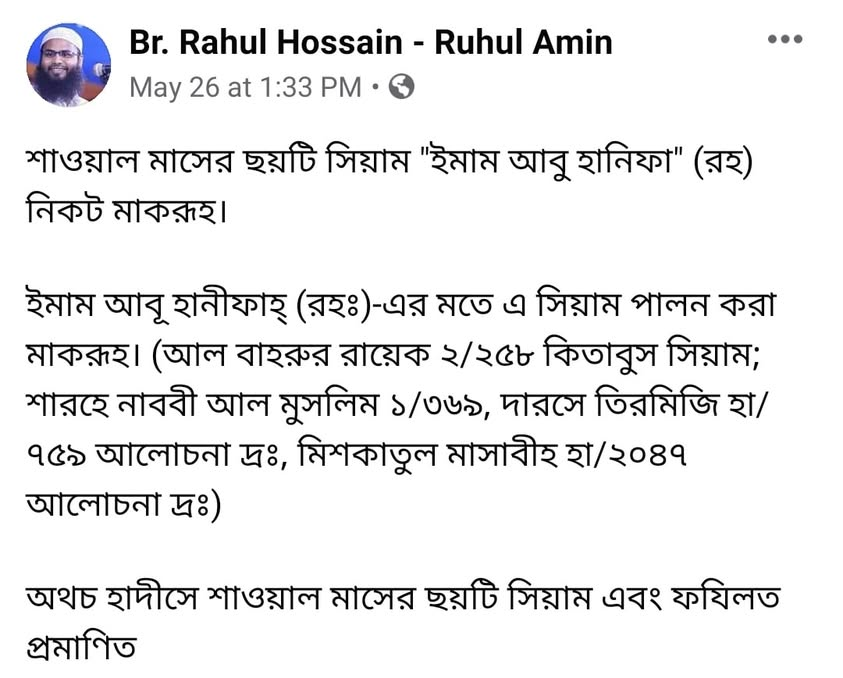

ইমাম আবু হানিফা রাহ-কে নিয়ে তাদের চুলকানি আছে, এটা আমরা সবাই জানি। তাহলে তাদের থেকে…
২৮ মে, ২০২০
ইমাম আবু হানিফা রাহ-কে নিয়ে তাদের চুলকানি আছে, এটা আমরা সবাই জানি। তাহলে তাদের থেকে খুঁচানো ছাড়া ভালোকিছু আশা করা বোকামো নয় কি?
শাওয়াল মাসের ছয় রোজাকে ইমাম আবু হানিফা মাকরূহ বলেছেন- তারা এটাই শুধু দেখেছে। অথচ, ইমাম মালেকও রাহ. এ রোজাকে মাকরূহ মনে করতেন। এমনকি ইবনু আব্দিল বর মালিকি রাহ. লিখেন-
أنكر [الامام مالك] صيام ست من صدر شوال إنكارا شديدا.
ইমাম মালেক শাওয়াল মাসের প্রথম দিকে ৬ রোজা রাখার ঘোর বিরোধিতা করতেন।
(আল কাফি ফি ফিকহি আহ্লিল মাদিনা-১/৩৫০)
ভাবুন কত কঠিন অবস্থান! পক্ষান্তরে ইমাম আবু হানিফা রাহ. থেকে সাধারণ মকরূহ (তানজিহি)-র বর্ণনা এসেছে মাত্র। এতেই তারা উনার নাম হাইলাইট করে, কিছুটা আঁড়চোখে থাকায়, মান খাটো করতে অপপ্রয়াস চালায়। কিন্তু ভুলেও ইমাম মালেকের নামে কিছু বলেছে- এমন কোনো আহলে হাদিস আপনি পাবেন না।
আবু হানিফা নিয়ে যে তাদের চুলকানি কত অধিক এবং উদ্দেশ্যপ্রণোদিত তা সহজেই অনুমেয়।
যাই হোক, মূল যে বিষয়ের উপর আমি ফোকাস করতে চাই, তা হচ্ছে।
(১) ইমাম আবু হানিফা রাহ.এবং ইমাম মালেক রাহ-এর নিকট মুসলিম শরীফ বা অন্যান্য কিতাবে আবু আইয়ুব আনসারি রা. থেকে বর্ণিত ৬ রোজার ফজিলত সংক্রান্ত হাদিস হয়ত পৌঁছায় নি। অথবা পৌঁছালেও সহীহ সনদ ছিল না। যে কারণে তারা এটিকে মাকরূহ মনে করতেন। আর সে যুগে এটি অস্বাভাবিক কিছু নয়। আরে ভাই সব হাদিস লিপিবদ্ধ ও হস্তলব্ধ থাকার পরও বিগত শতাব্দীর ইমামত্রয়- শাইখ বিন বায, শাইখ উসাইমিন ও শাইখ আলবানী রাহ-এর মাঝে তুমুল মতপার্থক্য দেখা দিয়েছে; তাও হালাল হারামের মতো বিষয়ে। কয়েকশো মাসাইলে তারা মতানৈক্য করেছেন।
এ নিয়ে স্বতন্ত্র কিতাবও রচিত হয়েছে।
কেউ কেউ তো স্পষ্ট ভুলে আছেন, হাদিসের বিপক্ষে অবস্থান নিয়েছন। এতে কি তারা অপরাধী? নাহ। উনারা সবাই মুজতাহিদের কাতারে উত্তির্ন হওয়ায় তাদের ভুলে কোনো পাপ নেই; বরং সাওয়াব, ইনশাআল্লাহ।
(২) হানাফি মাজহাবের পরবর্তী কেউ ৬ রোজা'কে মকরূহ বলেন নি। এখানেই তো প্রমাণ- আমরা হানাফি মাজহাব ও উসূল অনুসরণ করি, এর মানে এই না যে, ইমাম আবু হানিফার পূঁজা করি, তিনি যা বলেন তা-ই অন্ধের মতো গ্রহণ করি। চাই তা হাদিসের পক্ষে যাক বা বিপক্ষে! যদি তা-ই হতো, তবে আবু হানিফার মতের উপরই সকল ফতোয়া থাকত। অথচ, হানাফি মাজহাবে ৬ রোজা মাকরূহ নয়। এমনকি এমন প্রায় দুই তৃতীয়াংশ রায় ইমাম আবু হানিফার মতের বিপক্ষে রয়েছে।
কোরআন বা হাদিসের মুকাবেলায় কোনো ব্যক্তির কথাকে প্রাধান্য দিই না। দেয়া সম্ভবও নয়। এটাই আমাদের নীতি।
তারপরও যারা বলে মাজহাব মানেই অন্ধানুসরণ, সহীহ হাদিসের বিরোধিতা, তারা হয়ত বিবেক বন্ধক দিয়ে রেখেছে অথবা পারচেসড হয়ে গেছে। বিদ্বেষ আর প্রতিহিংসায় অন্তত লোড করে রেখেছে।
তাদের জন্য হেদায়াতের দোয়া ছাড়া আপাতত আর কিছু করার নেই।
